Aggersborg
Ringburg


23 - Aggersborg - Letztes Update 05.08.2025
| Navidaten: 56.99656 9.25464 oder: Thorupvej 13, 9670 Løgstør |
Im Vesthimmerlands Museum in Aars (Vesthimmerlands Museum - Søndergade 44 - 9600 Aars) wird im Zeitraum vom 31.05.2024 bis zum 16.03.2025 eine Sonderausstellung zu der ersten und größten wikingerzeitlichen Ringburg - der Aggersborg - gezeigt. Die Ringburg hat auch eine neue Webseite erhalten - https://aggersborg.com/ - wobei auch die vormalige Webseite aktuell weiterhin abrufbar ist - https://www.vesthimmerlandsmuseum.dk/aggersborg
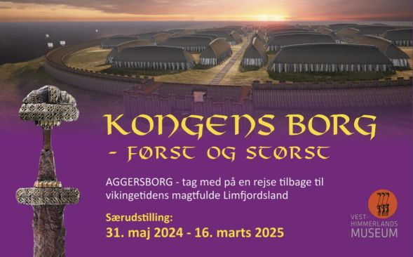
Über findet man einen 1.36 minütigen Drohnenflug über Aggersborg, der sich auf der Informationsseite des dänischen Nationalmuseums in Kopenhagen zur Bewerbung für die Aufnahme in die Welterbeliste der UNESCO befindet.
Gestern, am 17.09.2023, wurde in Riad in Saudi-Arabien auf der 45. Sitzung des Welterbekomitees der UNESCO beschlossen, die dänischen wikingerzeitlichen Ringburgen - Aggersborg, Fyrkat, Nonnebakken, Borgring und Trelleborg - zum Welterbe zu erklären. Herzlichen Glückwunsch! Zusammengefasste Informationen zur Bewerbung - in englischer Sprache - finden sich auf einer Webseite des dänischen Nationalmuseums.
Dieses Luftfoto zeigt die Aggersborg über den Limfjord hinweg und die sie umgebende Landschaft in Richtung Norden sehr schön. Ich weiß leider nicht mehr woher ich es habe. Falls sich der Rechteinhaber an der Verwendung hier stören sollte, bitte ich um Kontaktaufnahme.
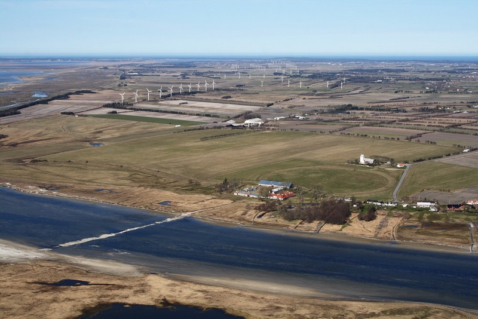
Dieses Senkrechtluftfoto ist von der Webseite "Skråfoto" - Aufnahmedatum 05.06.2021 (Download 12.03.2023 - von mir zugeschnitten) - die von Klimadatastyrelsen weltweit kostenlos bereitgestellt wird - Freie Nutzung unter Beachtung der Lizenz: CC BY 4.0. Nach Eingabe der Adresse kann man über diese Webseite das Objekt aus allen Himmelsrichtungen aufrufen. Es sind Aufnahmen aus mehreren Jahren - 04.05.2017 - 11.03.2019 - 05.06.2021 - 21.04.2023 abrufbar. Sie werden auch zukünftig alle 2 Jahren aktualisiert.
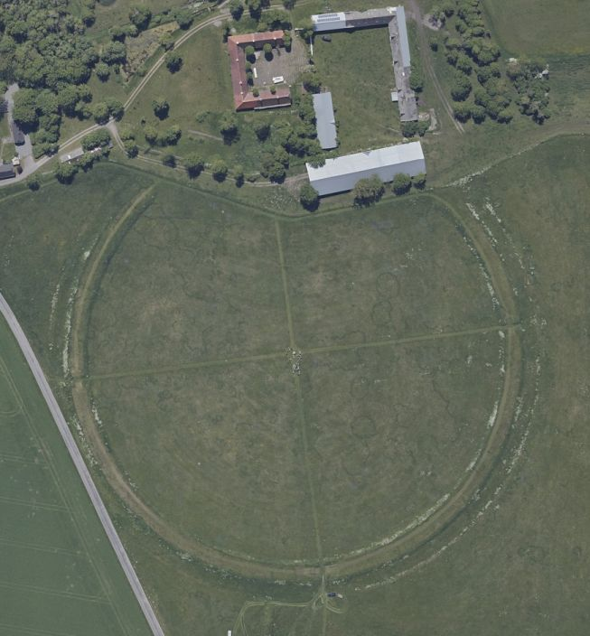
Im Rahmen meiner 2022er Jütland Wikingertour nahm ich mir mal wieder die Zeit und war am Donnerstag, 02.06.2022, vor Ort. Dabei konnte ich bei sehr schlechtem, kalten Wetter in Aggersborg diese Fotografien anfertigen:
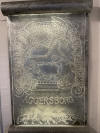 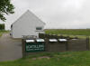 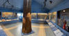 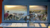 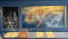 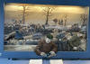 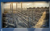 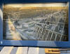 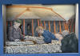 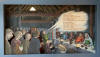 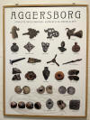


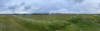 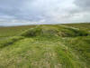 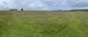 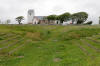 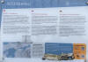 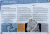 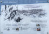 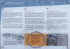 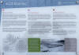 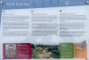


Bei meinem Besuch am 23.08.2013 habe ich diese Fotos aufgenommen:
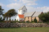 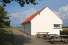 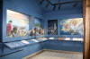 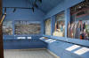 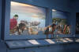


Die unmittelbar neben dem Ringwall gelegene Kirche und das kleine Ausstellungsgebäude mit Innenansichten.
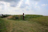 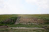 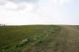 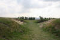 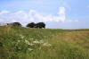 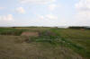


Der im Gelände angedeutete Ringwall der Aggersborg in einigen Ansichten.
Einen mehrsprachigen Flyer zur Aggersborg (auch in deutsch) findet man im Internet hier.
Eine in englischer Sprache gehaltene, wissenschaftliche Seite zur Archäologie der Aggersborg findet man hier.
Auf einem Acker zwischen der Kirche von Aggersborg und dem Hofgut Aggersborg, gegenüber von Løgstør, war einst eine wikingerzeitlichen Ringburg von imponierenden Ausmaßen aufgeführt. Sie wurde auf dem Vorsprung einer abfallenden Kuppe an der Nordküste des ausgedehnten Fjordsystems des Limfjord angelegt.
Bei den ersten archäologischen Untersuchungen, die in den Jahren 1945-1949 unter der Leitung des Museumsinspektors C. G. Schultz (Peder Berthold Carl Georg Schultz - *29.08.1905 - 17.07.1958, Architekt und Archäologe)
 Bildquelle:
KUML 1958 -
Nachruf C. G. Schultz 1905-1958 - Lizenz:
CC-BY-SA
Bildquelle:
KUML 1958 -
Nachruf C. G. Schultz 1905-1958 - Lizenz:
CC-BY-SA
durchgeführt worden sind, ergab sich, dass es sich um eine Anlage desselben Typs wie Fyrkat in Nordjütland, Trelleborg auf Seeland und Nonnebakken in Odense / Fünen handelt.
Bis 1976 wurden dann noch weitere vereinzelte Untersuchungen durchgeführt. Inzwischen wurde der Ringwall und der Wallgraben teilweise angedeutet. Neben der Kirche wurde ein kleines Ausstellungsgebäude eingerichtet.
Aggersborg war die mächtigste der genannten Ringburgen. Der Plan entspricht dem der anderen Wikingerburgen, hat aber größere Ausmaße und wurde um 8 Hauskarrees im Innern der Burg erweitert, so dass Aggersborg 48 Häuser aufgewiesen hat. Die Anlage hatte einen inneren Durchmesser von 240 m und war von einem wenigstens 3 m hohen Ringwall umgeben, der aus Erde und Torf über einer Skelettkonstruktion aus schweren Planken aufgeworfen und außen mit waagrechten Holzplanken bekleidet und durch Querabsteifungen gesichert war.
Da Aggersborg ein Stück landeinwärts auf einer breiten Landzunge liegt, war es notwendig gewesen, sie ganz mit einem Wallgraben zu umschließen. Ein 8 m breiter Absatz trennt den Wall vom äußeren Wallgraben, der nur 5 m breit und 1,3 m tief war.
Vier Tore im Wall standen in Verbindung mit zwei Holzbohlenstraßen, die die ganze Anlage in nord-südlicher und ost-westlicher Richtung durchschneiden. Im Kreuz zwischen den beiden Straßen stand ein Wachturm auf 4 schweren Pfosten. Die Häuser lagen zu je 4 vereinigt um einen Hofplatz, 12 in einem Viertel der Anlage, die, durch kurze Querstraßen voneinander getrennt, rechtwinklig an den Hauptstraßen lagen. Die Längswände der Aggersborg waren weniger stark gebogen als die der Trelleborg. Hingegen waren die Giebel breiter gewesen. Der Ausgräber gelangte zu der Auffassung, dass die Längswände nicht mit senkrechten dichtgestellten Planken (Stabbohlen) errichtet waren, sondern dass man sie mit lehmbeworfenem Flechtwerk zwischen den senkrechten Pfosten verschlossen hatte, während die Giebel mit waagrechten Planken (Bohlenwerk) ausgefüllt waren.
Die angewandte Maßeinheit entspricht auch bei der Aggersborg ungefähr einem römischen Fuß (ein römischer Normalfuß entspricht 29,57 cm / berechnetes Mittelmaß des Trelleborgfußes entspricht 29,33 cm), der sich in allen Hauptmaßen der Burg nachweisen lässt.
So sind zum Beispiel die Häuser 110 Fuß lang, der innere Ringwallradius hatte 407 Fuß betragen und der viereckige Mittelplatz die Maße von 72 x 72 Fuß.
Bei den Untersuchungen konnte auch festgestellt werden, dass ein älteres Dorf weichen musste, um Platz für die Aggersborg zu schaffen. Das Dorf bestand aus 8 Langhäusern und mehr als 100 Ost-West gerichteten, mit Abfall gefüllten Grubenhäusern, ohne Herdstellen, aber stets mit einem kräftigen Pfostenloch an dem einen Schmalende, deren Pfosten einen waagrechten Längsbalken, vielleicht einen Dachfirst, getragen haben müssen. Dass hier bedeutende Menschen lebten, bezeugt der Fund eines 41 m Langhauses mit nicht weniger als 9 Räumen. In einem der Pfostenlöcher des Hauses fand man einen Goldring (Länge: 8,2 cm/Gewicht 71,2 g/10 Jh.). Dieses Dorf wurde um 700 gegründet und durfte damit knapp 300 Jahre bestehen, ehe es vermutlich brutal geschleift wurde.
Die Tatsache, dass die fünf bekannten Ringburgen alle mit der gleichen Maßeinheit und, soweit man beurteilen kann, innerhalb von wenigen Jahren angelegt worden sind, beweist, dass sie nach dem Wunsch desselben Bauherren und von denselben Baumeistern nach einem wohlüberlegten, großzügigen, das ganze Land umfassenden Plan aufgeführt worden sein müssen.
Durch Jahresringmessungen (Dendrochronolgie) an dem im Trelleborg Wallgraben verwendeten Holz, konnte nachgewiesen werden, dass die Bäume für den Bau der Burganlage im Winterhalbjahr 980-981 gefällt und vermutlich im folgenden Sommer zum Bau genutzt worden sind. Die Aggersborg, bei deren Untersuchung keine Funde gemacht wurden, die eine Datierung zuließen, wird demzufolge in die gleiche Zeit zu legen sein. Als Bauherren wird man demnach, den für diese Zeit historisch bezeugten König Harald Blauzahn (ca. 940-985) annehmen müssen.
Über größere Sicherheit verfügt man bezüglich dem Untergang der Burg, da der Odenseer Mönch Ælnoth, der ca. 1120 das Leben Knud IV. des Heiligen (1043-1086) schildert, die Zerstörung der Königsburg Aggersborg in Zusammenhang mit dem Aufruhr der Vendsysselbewohner gegen König Knud im Jahre 1086 schildert.
Sie griffen Knud und sein Gefolge an, die im Aggersborg Kongsgård übernachteten - dachten die Aufrührer. Denn Knud, der offenbar gut täuschen konnte, hatte sich selbst mit nur wenigen Leuten in einem bescheidenen Hof, der etwas entfernt lag, einquartiert, wodurch er überlebte und weiter fliehen konnte, während sein Gefolge grausam massakriert und der Königshof niedergebrannt wurde. "Einige zerrten die Nackten aus dem Bett, einige hängten sie draußen an den Türen auf, andere warfen sie ins Wasser.... Einige sinken tot oder verwundet zu Boden wie zerrissenes Wild", schrieb der besagte Mönch. Der Königshof wurde jedoch nach Knuds dramatischem Tod in der Odense Domkirke (Dom von Odense), wo die "Jyder" ihn schließlich erwischten, wieder aufgebaut. Bei der Gelegenheit kann auch Nonnebakken erstürmt und verbrannt worden sein.
Eine neue Königsburg wurde später an die strategisch wichtige Überfahrtsstelle am Limfjord gebaut, möglicherweise da, wo jetzt der Herrenhof Aggersborg liegt. Diese mittelalterliche Burg wurde aufs neue in Brand gesteckt und geplündert, und zwar zum ersten Mal während des Aufruhrs der Großen gegen Valdemar Atterdag (1321-1375) um 1370 und später während des Bürgerkriegs im Jahre 1441, also in der Zeit Königs Christoffer von Bayern (1439-1448). Der jetzige Hof stammt von 1758.
Eine der Ursachen für Aggersborgs große Bedeutung war, dass dort nicht nur ein ost-westlich verlaufender Wasserweg einen nord-südlich verlaufenden Landweg kreuzte. Es gab auch einen nord-südlich verlaufenden Seeweg. Mit einem Wasserstand, der vielleicht knapp einen Meter höher war als heute, sah die Küstenlinie des Limfjords an etlichen Stellen in der Wikingerzeit anders aus. Im Nordwesten lag eine große, flache Meeresbucht. Ortsnamen wie Thorup Fjordholme, Klim Odde, Korsholm und Gøttrup Holme, die heute weit im Landesinnern liegen, beschreiben, die mögliche Ausdehnung der Bucht. Nur eine ca. fünf Kilometer breite Land- oder vielleicht eher Sandzunge hat diesen Fjord von der Jammerbucht im Norden getrennt, und durch diese Landzunge gab es wahrscheinlich einen Kanal. Hierzu führte das Institut für Geologie und Geotechnik und die DTU (Dänemarks technische Universität) mit Unterstützung durch das Marinearchäologische Forschungszentrum in Roskilde eine Untersuchung des Gebietes mit Georadar durch. Zwischen Fjerritslev und Svinkløv konnte 20 m unter dem Flugsand eine nordost-südwestwärts verlaufende, fast 100 m breite Rinne beobachtet werden, die allem Anschein nach Wasser geführt hatte.
Die Untersuchung der Mündung dieser Rinne in die Nordsee ist noch nicht abgeschlossen, aber von dem 44m hohen Søbakke nördlich der Kollerup Plantage breitet sich eine trichterförmige Senke im Gelände nach Grønnestrand zwischen Borgstuebakken und Stenbjerg aus.
2014 kam ein knapp 500 Seiten starker, reich illustrierter Band über die Aggersborg in dänischer Sprache heraus (Aggersborg i vikingetiden. Bebyggelsen og Borgen - roter Einband / Englische Ausgabe "Aggersborg - The Viking-Age settlement and fortress" - blauer Einband). Darin enthalten sind die Ergebnisse der jahrelangen Forschung, insbesondere die Ergebnisse der Ausgrabungen aus den Jahren 1945-52. Im hinteren Einbanddeckel sind auch drei herausnehmbare separate Faltpläne der Burg in verschiedenen Maßstäben eingelegt, in die die Ausgrabungsbefunde eingezeichnet sind.
Die Informationen in "Fund og Fortidsminder" zur Aggersborg finden sich hier.
Literaturhinweise:
Else Roesdahl, Søren Michael Sindbæk, Anne Pedersen hrsg. - Aggersborg i
vikingetiden - Bebyggelsen og borgen - 543
sider - rigt ill. - med planche (roter Einband) - auch als
englischsprachige Ausgabe:
Søren Michael Sindbæk - Aggersborg. Vikingetidens ringborge - Vol. 2. - 144 pages - ill.